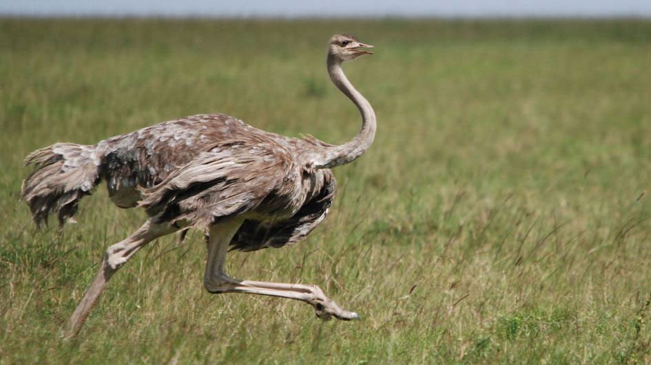

avestruzes
esta página originalmente serviria para postar os devaneios de uma avestruz intelectual
mas devido a uma crise existencial, fui para as florestas visitar meus parentes e tive algumas realizações incriveis
voltei para minha casa pensando que poderia fazer algo para minha espécie; eis o motivo da criação desta página sobre as avestruzes
curiosidades
você pode começar por esta página, onde explico de onde vem as avestruzes e para onde vão elas
pesquisa
a página serve para os curiosos que não se contentaram com o que digo
cultura
esta página serve para te mostrar os bicos famosos que meus parentes fizeram
quiz
por fim, a página serve para você testar seus conhecimentos sobre meus parentes